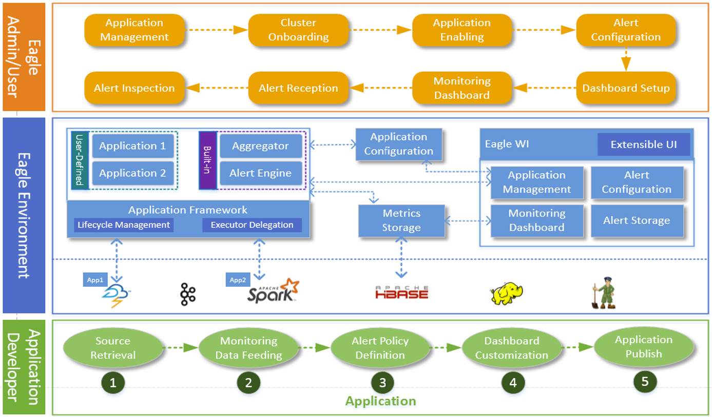
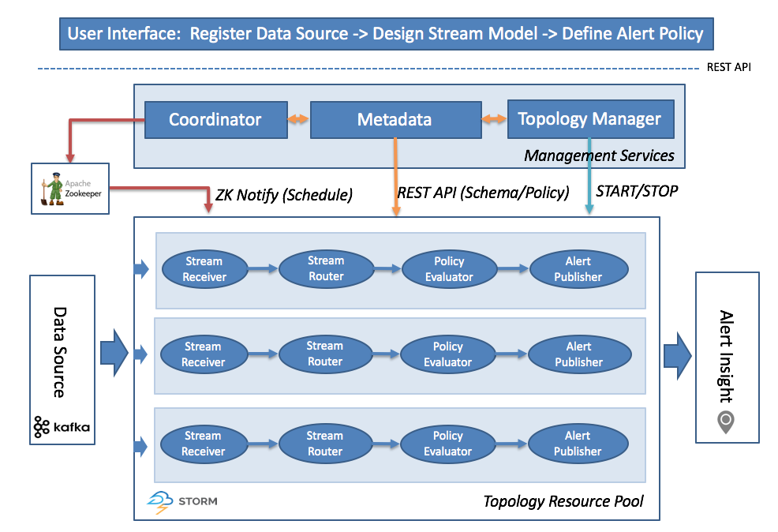
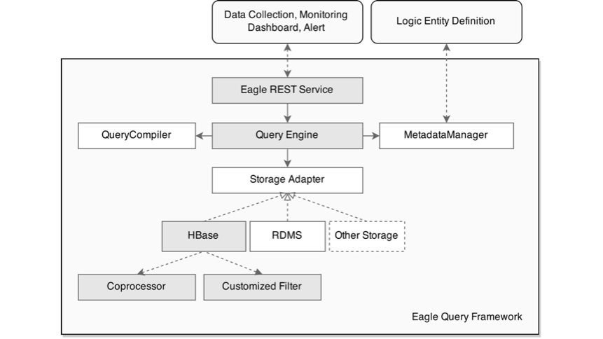

Architecture

Eagle Apps
- Security
- Hadoop
- Operational Intelligence
For more applications, see Applications.
Eagle Interface
- REST Service
- Management UI
- Customizable Analytics Visualization
Eagle Integration
Eagle Framework
Eagle has multiple distributed real-time frameworks for efficiently developing highly scalable monitoring applications.
Alert Engine

- Real-time: Apache Storm (Execution Engine) + Kafka (Message Bus)
-
Declarative Policy: SQL (CEP) on Streaming from hadoopJmxMetricEventStream [metric == "hadoop.namenode.fsnamesystemstate.capacityused" and value > 0.9] select metric, host, value, timestamp, component, site insert into alertStream;
-
Dynamical onboarding & correlation
- No downtime migration and upgrading
Storage Engine

-
Light-weight ORM Framework for HBase/RDMBS
@Table("HbaseTableName") @ColumnFamily("ColumnFamily") @Prefix("RowkeyPrefix") @Service("UniqueEntitytServiceName") @JsonIgnoreProperties(ignoreUnknown = true) @TimeSeries(false) @Indexes({ @Index(name="Index_1_alertExecutorId", columns = { "alertExecutorID" }, unique = true)}) public class AlertDefinitionAPIEntity extends TaggedLogAPIEntity{ @Column("a") private String desc; -
Full-function SQL-Like REST Query
Query=UniqueEntitytServiceName[@site="sandbox"]{*} -
Optimized Rowkey design for time-series data, optimized for metric/entity/log, etc. different storage types
Rowkey ::= Prefix | Partition Keys | timestamp | tagName | tagValue | … -
Secondary Index Support @Indexes(, unique = true/false)})
-
Native HBase Coprocessor org.apache.eagle.storage.hbase.query.coprocessor.AggregateProtocolEndPoint
UI Framework
Eagle UI is consist of following parts:
- Eagle Main UI
- Eagle App Portal/Dashboard/Widgets
- Eagle Customized Dashboard
Application Framework
Application
An "Application" or "App" is composed of data integration, policies and insights for one data source.
Application Descriptor
An "Application Descriptor" is a static packaged metadata information consist of basic information like type, name, version, description, and application process, configuration, streams, docs, policies and so on.
Here is an example ApplicationDesc of JPM_WEB_APP
{
type: "JPM_WEB_APP",
name: "Job Performance Monitoring Web ",
version: "0.5.0-incubating",
description: null,
appClass: "org.apache.eagle.app.StaticApplication",
jarPath: "/opt/eagle/0.5.0-incubating-SNAPSHOT-build-20161103T0332/eagle-0.5.0-incubating-SNAPSHOT/lib/eagle-topology-0.5.0-incubating-SNAPSHOT-hadoop-2.4.1-11-assembly.jar",
viewPath: "/apps/jpm",
providerClass: "org.apache.eagle.app.jpm.JPMWebApplicationProvider",
configuration: {
properties: [{
name: "service.host",
displayName: "Eagle Service Host",
value: "localhost",
description: "Eagle Service Host, default: localhost",
required: false
}, {
name: "service.port",
displayName: "Eagle Service Port",
value: "8080",
description: "Eagle Service Port, default: 8080",
required: false
}]
},
streams: null,
docs: null,
executable: false,
dependencies: [{
type: "MR_RUNNING_JOB_APP",
version: "0.5.0-incubating",
required: true
}, {
type: "MR_HISTORY_JOB_APP",
version: "0.5.0-incubating",
required: true
}]
}
Application Provider
Appilcation Provider is a package management and loading mechanism leveraging Java SPI.
For example, in file META-INF/services/org.apache.eagle.app.spi.ApplicationProvider, place the full class name of an application provider:
org.apache.eagle.app.jpm.JPMWebApplicationProvider
Concepts
- Here are some terms we are using in Apache Eagle (incubating, called Eagle in the following), please check them for your reference. They are basic knowledge of Eagle which also will help to well understand Eagle.
Site
- A site can be considered as a physical data center. Big data platform e.g. Hadoop may be deployed to multiple data centers in an enterprise.
Application
- An "Application" or "App" is composed of data integration, policies and insights for one data source.
Policy
- A "Policy" defines the rule to alert. Policy can be simply a filter expression or a complex window based aggregation rules etc.
Alerts
- An "Alert" is an real-time event detected with certain alert policy or correlation logic, with different severity levels like INFO/WARNING/DANGER.
Data Source
- A "Data Source" is a monitoring target data. Eagle supports many data sources HDFS audit logs, Hive2 query, MapReduce job etc.
Stream
- A "Stream" is the streaming data from a data source. Each data source has its own stream.
Quick Start
Deployment
Prerequisites
Eagle requires the following dependencies:
- For streaming platform dependencies
- Storm: 0.9.3 or later
- Hadoop: 2.6.x or later
- Hbase: 0.98.x or later
- Kafka: 0.8.x or later
- Zookeeper: 3.4.6 or later
- Java: 1.8.x
- For metadata database dependencies (Choose one of them)
- MangoDB 3.2.2 or later
- Installation is required
- Mysql 5.1.x or later
- Installation is required
- MangoDB 3.2.2 or later
Notice:
Storm 0.9.x does NOT support JDK8. You can replace asm-4.0.jar with asm-all-5.0.jar in the storm lib directory. Then restart other services(nimbus/ui/supervisor).
Installation
Build Eagle
-
Download the latest version of Eagle source code.
git clone https://github.com/apache/incubator-eagle.git -
Build the source code, and a tar.gz package will be generated under eagle-server-assembly/target
mvn clean install -DskipTests
Deploy Eagle
- Copy binary package to your server machine. In the package, you should find:
- bin/: scripts used for start eagle server
- conf/: default configurations for eagle server setup.
- lib/ : all included software packages for eagle server
- Change configurations under
conf/- eagle.conf
- server.yml
-
Run eagle-server.sh
./bin/eagle-server.sh start -
Check eagle server
- Visit http://host:port/ in your web browser.
Setup Your Monitoring Case
Placeholder for topic: Setup Your Monitoring Case